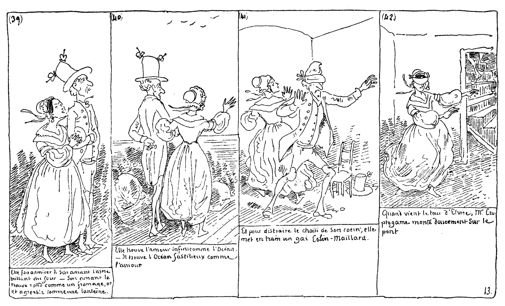
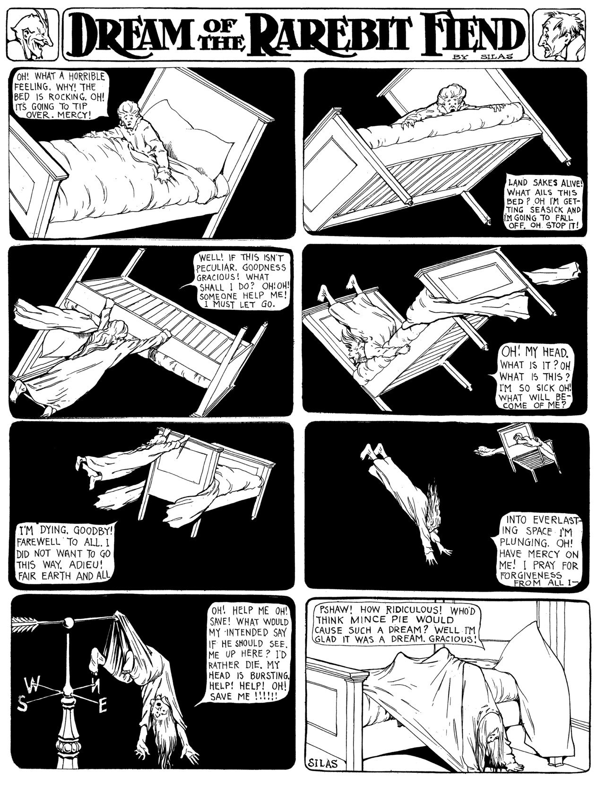

Essay
Between the Panels
Disentangling Comics as a Separate Modality from Images and Videos

Many stories throughout history have been told in a few still moments, from a collection of drawings to a sequence of pictures, entrusting everything in between to the reader's eye and imagination. And we as readers have connected these illustrations into coherent narratives and interpretations that may even span thousands of pages, evidently seen in the modern-day comics and manga. Vision-language models can now follow the unbroken flow of video, yet this far older art remains a largely unexplored modality.
The last of those sentences packs a great deal of computer vision into one clause and I will unpack it before going anywhere near a comic.
Computer vision is the field concerned with inferring the content of images from their pixels. For most of its history it posed that inference as a set of separate perceptual tasks with fixed outputs. A model assigned an image to one of a thousand categories, drew boxes around objects, labelled every pixel or followed an object through a video. Each task had its own model and its own label set.
What people want to know about an image rarely fits a label set chosen in advance. They ask what is happening in it and why it is happening and what the sign in the background says. Answering takes an output as open as the question and language is the most general output we have.
Two developments made that output possible. The first was training on images paired with their captions at the scale of the web. It placed images and text in a shared embedding space so that a picture could be matched against an arbitrary description instead of a fixed list of classes [1]. The second was the large language model. A language model connected to a vision encoder generates free-form text conditioned on the image and on whatever is asked about it [2]. The result is the vision-language model (VLM). One system now captions photographs, reads documents, answers questions and follows a video when it is given the frames in order. Each step widened the input the field could handle. It went from one image with a fixed label to one image described in open language and then to many images in time.
Comics should have been the obvious next step because they also present many images in sequence but sample them sparsely and at irregular intervals instead of at a fixed frame rate. The field has largely passed them over [3]. I think that is a mistake and this series is my attempt to argue it with equations rather than enthusiasm. There will also be enthusiasm.
The short version of this first part is that a comic gives a model a sequence of images without the frame-to-frame redundancy that makes video tractable. The longer version sets out what a VLM actually computes on a comic page, which assumptions it inherits from image and video models and which of those a comic breaks.
A page becomes 750 vectors
A VLM couples a vision encoder with a language model. The encoder divides an image into square patches that are typically 14 pixels a side and maps each patch to an embedding [4]. Many current models then merge each 2 × 2 group of neighbouring patches so that one visual token represents a 28-pixel square [5]. The language model processes these visual tokens in a single sequence with the tokens of the text query and generates its response conditioned on both. A comic page resized to 768 × 768 pixels therefore enters the model as roughly (768 / 28)² ≈ 750 visual tokens.
That is the whole page. Everything the story depends on has to be recoverable from those 750 vectors and that includes the text in its balloons and the order of its panels. Hold on to the number because it returns later with more zeros.
What every video model quietly assumes
Video models have an easier time and it is worth seeing exactly why. Video presents the same encoder with a sequence of frames I1, I2, …, In sampled at a fixed rate that is often one or two frames per second for a VLM. Consecutive frames differ by small displacements and most of video understanding is built on that redundancy. Optical flow rests on brightness constancy [6],
which assumes that the content at pixel (x, y) reappears in the next frame with the same intensity after a displacement of (u, v). Read plainly it says that nothing moves far between two frames. Multi-object trackers rely on the same fact when they link each detection to a detection in the next frame by overlap and predicted motion. Video VLMs rely on it again when they merge tokens across adjacent frames because adjacent frames encode nearly the same content. All three exploit temporal continuity. This is the property that the state of the scene at time t + 1 is close to its state at time t.
The assumption holds so reliably in video that it rarely gets stated at all.
Then a comic breaks all of it
A comic is also a sequence of images but its sampling is chosen by an author rather than by a clock. Between two panels the viewpoint can cut and the scale can change by an order of magnitude and seconds or years can elapse. The pixels of one panel have no correspondence with those of the next. Brightness constancy, overlap and frame redundancy therefore fail together at the panel boundary. Not occasionally. They fail at every boundary on every page.

The comics theorist Scott McCloud named the reader's inference across that boundary closure and his own demonstration needs only two panels [7]. In the first a man raises an axe over his victim. In the second a scream carries across the night sky. The blow is drawn nowhere and every reader supplies it anyway. McCloud went on to classify panel transitions by what they elide. Some skip a single moment and others skip an entire scene. Iyyer et al. turned closure into prediction tasks over 1.2 million panels and found that neither the text nor the image alone suffices to follow the story [8]. In the terms of machine learning closure is the inference of unobserved intermediate states from sparse and irregularly sampled observations without a continuity prior. Readers perform it at every panel boundary and never notice.
Three further properties separate comics from both images and video.
- The text is part of the image. Dialogue reaches the model as pixels inside the balloons and not as a separate transcript. The layout also encodes what a transcript would state outright. It gives the order of the panels and balloons and each balloon's tail gives the speaker of its line.
- Characters are redrawn and not captured. Two frames of a video show the same person as largely the same pixels with a small displacement. Two panels of a comic show the same character as two independent drawings that may differ in pose, scale, costume and degree of stylisation. Recognising the character is therefore re-identification without motion cues.
- Dependencies are long-range. Understanding an event in chapter 40 can require a page from chapter 2. A long-running series at 750 tokens a page exceeds a million visual tokens. There is the number again. That page has to be located before it can be read.
So it is a modality of its own
Put together a comic is a distinct input modality. It is a sparse sequence of images sampled by its author with text embedded in the pixels. Its characters recur but are redrawn and its dependencies span thousands of pages. A single image tests the perception of one scene and video tests the perception of a scene that changes smoothly from frame to frame. A comic tests whether a model can construct a narrative from sparsely sampled visual evidence. Video never isolates that capability because its frame rate leaves no gap to infer.
The same capability underlies the applications that make comics worth modelling. They include audio description for blind and low-vision readers [9], translation with the artwork in view and search over printed narratives.
Readers have been filling these gaps for as long as comics have existed. Asking a model to do the same seems only fair.
Hey, you're awesome for making it till the end! Subscribe for more shenanigans :)
References
- Radford et al. Learning Transferable Visual Models From Natural Language Supervision. ICML 2021.
- Liu et al. Visual Instruction Tuning. NeurIPS 2023.
- Vivoli et al. One Missing Piece in Vision and Language: A Survey on Comics Understanding. arXiv 2024.
- Dosovitskiy et al. An Image is Worth 16x16 Words: Transformers for Image Recognition at Scale. ICLR 2021.
- Wang et al. Qwen2-VL: Enhancing Vision-Language Model's Perception of the World at Any Resolution. arXiv 2024.
- Horn and Schunck. Determining Optical Flow. Artificial Intelligence 17, 1981.
- McCloud. Understanding Comics: The Invisible Art. Tundra Publishing, 1993.
- Iyyer et al. The Amazing Mysteries of the Gutter: Drawing Inferences Between Panels in Comic Book Narratives. CVPR 2017.
- Sachdeva and Zisserman. The Manga Whisperer: Automatically Generating Transcriptions for Comics. CVPR 2024.